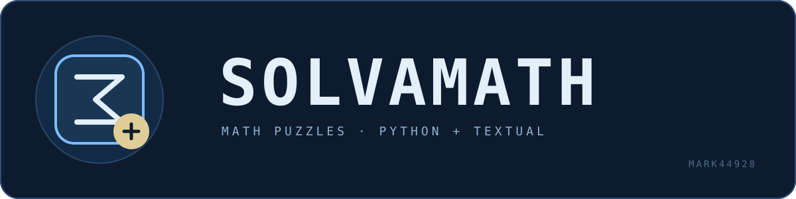
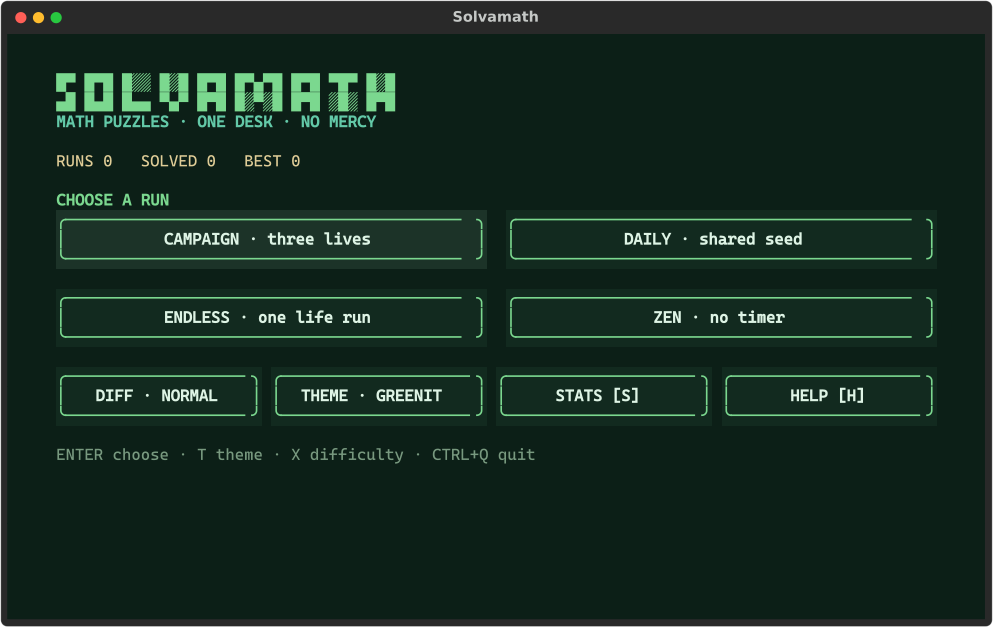
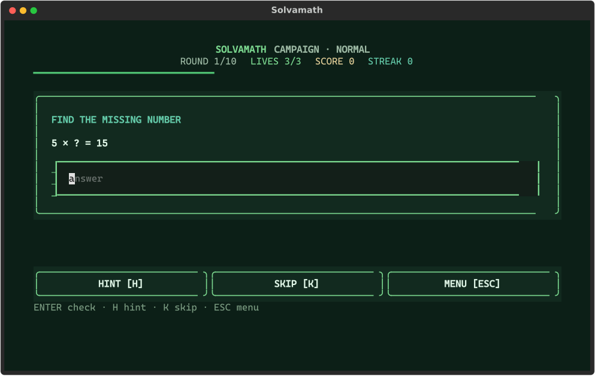

Game · Python + Textual
MATH.
PUZZLES.
STREAKS.
A feature-packed terminal math game: seven puzzle families, daily seeds, timers, streaks, hints, achievements and a local record that keeps you honest.
pipx install git+https://github.com/Mark44928/Solvamath.git solvamath

7puzzle families
4run modes
5themes
14automated tests
Choose your pressure
Campaign
10 puzzles. Three lives. A clean finish is a perfect run.
Daily
The same seeded sequence for everyone today.
Endless
Keep the streak alive until the lives run out.
Zen
No timer. No death. Just the puzzles.
What gets tested
- Equationssolve for x
- Operatorsfill gaps left to right
- Sequencesarithmetic, geometric, squares
- Make 24all four numbers, once
- True / falsequick arithmetic checks
- Prime stepthe next prime, exactly
- Missing numbersinverse reasoning
- Scoringtime bonus, streak multiplier, hint penalty
The UI

No install, no browser game
Solvamath is the real Textual app in your terminal. There is no web clone and no server to keep alive. Install it where you play; all data stays local.